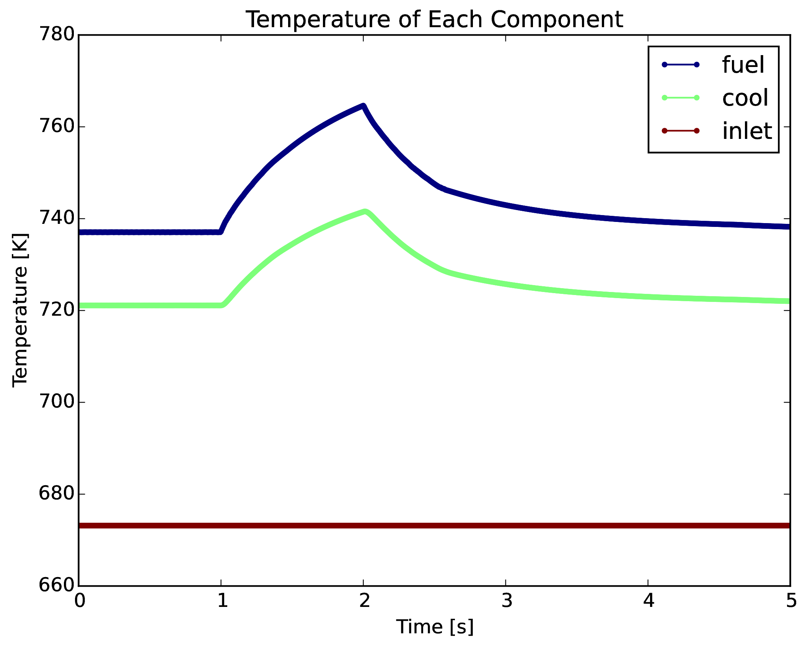

PyRK
Python For Reactor Kinetics
Kathryn Huff
SciPy Conference, July 8, 2015


PyRK: Python for Reactor Kinetics
Review of Nuclear Reactor Kinetics

\[\sigma(E,\vec{r},\hat{\Omega},T,t,x,i)\]


\[k\]

\[i\]

\[\beta_i\]
Reactivity
\[ \begin{align} \rho &= \frac{k-1}{k}\\ \rho &= \mbox{reactivity}\\ k &= \mbox{"neutron multiplication factor"}\\ &= \frac{\mbox{neutrons causing fission}}{\mbox{neutrons produced by fission}}. \end{align} \]PRKE
\[ \rho(t) = \rho_0 + \rho_f(t) + \rho_{ext} \]where
\[ \begin{align} \rho(t) &= \mbox{total reactivity}\\ \rho_f(t) &= \mbox{reactivity from feedback}\\ \rho_{ext}(t) &= \mbox{external reactivity insertion}\\ \rho_f(t) &= \sum_i \alpha_i\delta T_i\\ T_i &= \mbox{temperature of component i}\\ \alpha_i &= \mbox{temperature reactivity coefficient of i}. \end{align} \]

What Was That?
\[ \begin{align} p &= \mbox{ reactor power }\\ \rho(t,&T_{fuel},T_{cool},T_{mod}, T_{refl}) = \mbox{ reactivity}\\ \beta &= \mbox{ fraction of neutrons that are delayed}\\ \beta_j &= \mbox{ fraction of delayed neutrons from precursor group j}\\ \zeta_j &= \mbox{ concentration of precursors of group j}\\ \lambda_{d,j} &= \mbox{ decay constant of precursor group j}\\ \Lambda &= \mbox{ mean generation time }\\ \omega_k &= \mbox{ decay heat from FP group k}\\ \kappa_k &= \mbox{ heat per fission for decay FP group k}\\ \lambda_{FP,k} &= \mbox{ decay constant for decay FP group k}\\ T_i &= \mbox{ temperature of component i} \end{align} \]Simulation Methods
- Monte Carlo Methods
- Deterministic Methods
- Hybrid Methods
- Other keywords...
- lattice codes
- ray tracing algorithms
- acceleration schemes
- adjoint methods
- ...
PyRK
- 6-precursor-group,
- 11-decay-group PRKE model
- Lumped Parameter thermal hydraulics model
- Object-oriented, geometry and material agnostic framework
Quality Control
- Unit Checking: Pint (github.com/pint)
- Version Control: Git & GitHub (github.com/pyrk/pyrk)
- Automated Documentation: Sphinx (pyrk.github.io)
- Test Suite: nose
- Continuous Integration: Travis (travis-ci.org/pyrk/pyrk)
- Plotting: Matplotlib
- ODE solves: SciPy
Unit Checking

In PyRK, the Pint package (pint.readthedocs.org/en/0.6/) is used keeping track of units, converting between them, and throwing errors when unit conversions are not sane.
Version Control

Keeping track of versions of the code makes it possible to experiment without fear and placing the code online encourages use and collaboration.
Automated Documentation

Automated documentation creates a browsable website explaining the most recent version of the code.
Test Suite

The classes and functions that make up the code are tested individually for robustness using nose.
Continuous Integration
The tests are run every time a change is made to the repository online. The results are public. If a main branch has a failed test, I get an email.
PyRK: Design
- SimInfo : Reads the input file, manages the solution matrix, Timer, and communication between neutronics and thermal hydraulics.
- Neutronics : calculates $dP/dt$, $d\omega_j/dt$, based on $dT_i/dt$ and the external reactivity insertion.
- THSystem : manages various THComponents, facilitates their communication.
- THComponent : Conducts lumped parameter calculation. Other thermal models can inherit from it and replace it in the simulation.
- Material : A class for defining the intensive properties of a material ($c_p$, $\rho$, $k_{th}$). Subclasses include Flibe, Graphite, SS316, and others.
Neutronics : Reactivity Insertion Model

The reactivity insertion that drives the simulator can be selected and customized from three models.
Lumped Parameter Heat Transfer
The heat flow out of body $i$ is the sum of surface heat flow by conduction, convection, radiaion, and other mechanisms to each adjacent body, $j$: \[ \begin{align} Q &= Q_i + \sum_j Q_{ij}\\ &=Q_i + \sum_j\frac{T_{i} - T_{j}}{R_{th,ij}}\\ \dot{Q} &= \mbox{total heat flow out of body i }[J\cdot s^{-1}]\\ Q_i &= \mbox{other heat transfer, a constant }[J\cdot s^{-1}]\\ T_i &= \mbox{temperature of body i }[K]\\ T_j &= \mbox{temperature of body j }[K]\\ j &= \mbox{adjacent bodies }[-]\\ R_{th} &= \mbox{thermal resistence of the component }[K \cdot s \cdot J^{-1}]. \end{align} \]Minimal Example
Sodium Cooled Fast Reactor
- Sodium Coolant
- Metal Fuel
- Steady Inlet Temperature
- Impulse Reactivity Insertion
Impulse Reactivity Insertion

Impulse Reactivity Insertion
# External Reactivity
from reactivity_insertion \
import ImpulseReactivityInsertion as pulse
rho_ext = pulse(timer=ti,
t_start=1.0*units.seconds,
t_end=2.0*units.seconds,
rho_init=0.0*units.delta_k,
rho_max=0.05*units.delta_k)
Impulse Reactivity Insertion
Components
fuel = th.THComponent(name="fuel",
mat=SFRMetal(name="sfrfuel"),
vol=vol_fuel,
T0=t_fuel,
alpha_temp=alpha_f,
timer=ti,
heatgen=True,
power_tot=power_tot)
cool = th.THComponent(name="cool",
mat=Sodium(name="sodiumcoolant"),
vol=vol_cool,
T0=t_cool,
alpha_temp=alpha_c,
timer=ti)
inlet = th.THComponent(name="inlet",
mat=Sodium(name="sodiumcoolant"),
vol=vol_cool,
T0=t_inlet,
alpha_temp=0.0*units.pcm/units.K,
timer=ti)
Heat Transfer
# The clad convects with the coolant
fuel.add_convection('cool', h=h_cool, area=a_fuel)
cool.add_convection('fuel', h=h_cool, area=a_fuel)
# The coolant flows
cool.add_mass_trans('inlet', H=h_core, u=v_cool)
components = [fuel, cool, inlet]
Component Temperatures

{kind=link}
Acknowledgements
- Xin Wang,
- Per Peterson,
- Ehud Greenspan,
- and Massimiliano Fratoni

Get The Code!

THE END
Katy Huff
katyhuff.github.io/pyrk-scipy-2015
PyRK by Kathryn Huff is licensed under a Creative Commons Attribution 4.0 International License.
Based on a work at http://katyhuff.github.io/bids-faire-2015.